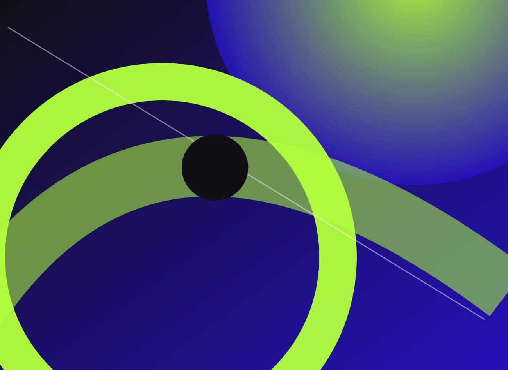
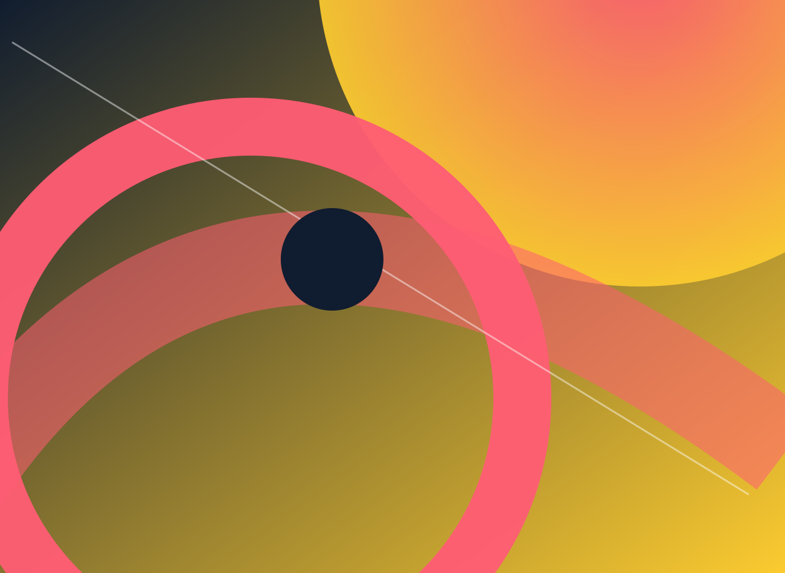
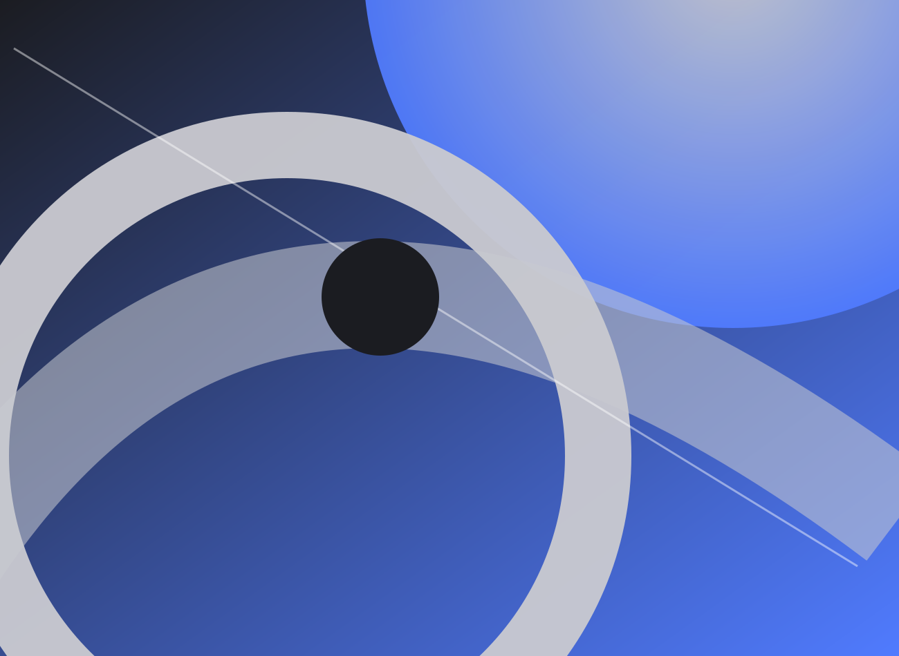

Independent creative digital studio / ConceptNós
Nós
arriscamos.
Uma identidade imaginária para quem acredita que o extraordinário começa quando se questiona o óbvio.
Design / Movimento / Cultura
01 / ManifestoNão queremos
Não queremos
mais do mesmo.
Risco é uma marca fictícia de direção de arte e experiências digitais. Um campo aberto para testar ritmo, linguagem visual e coragem criativa.
02 / TrabalhosIdeias em
Ideias em
estado bruto.
Três projetos gráficos conceituais internos, cada um com sua própria história visual.

Frequência
Identidade em movimento para um festival imaginário de música e cultura.
Entrar no projeto ↗
Órbita
Universo visual especulativo sobre movimento e novas formas de circular.
Entrar no projeto ↗
Matéria
Uma campanha editorial que transforma textura em linguagem.
Entrar no projeto ↗
03 / O nosso universo
Forma é atitude.
Identidade visual, direção de arte, motion e experiências digitais. Movimento quando faz sentido; clareza sempre.
Explorar o estúdio